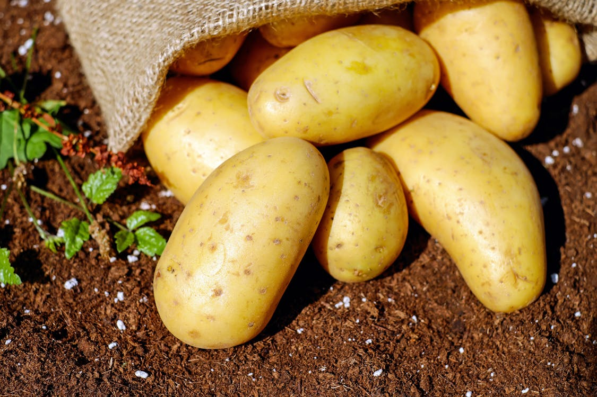
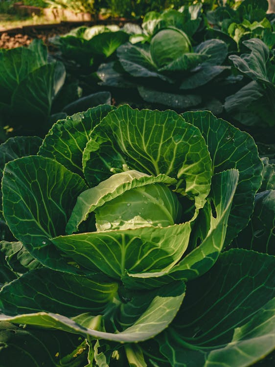
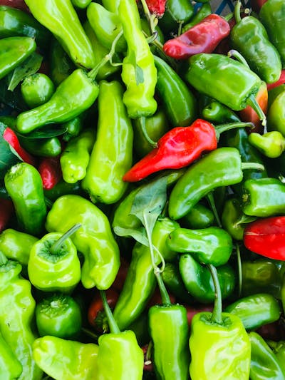
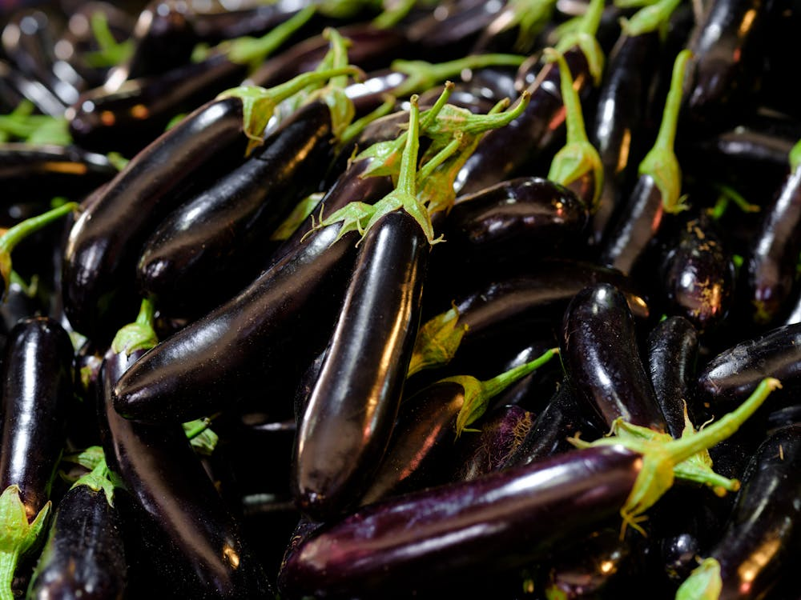

Afacerea mea
Acest site contine detalii despre producerea,intretinerea si exportul alimentelor! Daca ai deja cont,te invit sa dai login mai jos

Principalele Recolte

Cartofii sunt pe primul loc pentru ca se produc cel mai mult si sunt cei mai cautati

Dupa cartofi,cea mai cautata recolta este cea de Varza!

Eroul verii,pe vreme prielnica ai un anotimp intreg de cules. Ardeii!

In aceeasi liga,in acelasi anotimp,aceeasi cerere ca si ardeii sunt Vinetele!
"În fiecare sămânță există o promisiune de viață și de creștere. Cu răbdare, grijă și muncă asiduă, acea sămânță devine o recoltă bogată. Agricultura este arta de a transforma speranța în realitate și de a hrăni lumea."
-Tata
E timpul sa ni te alaturi in aceasta aventura!
Inscrie-te sa putem astfel sa creem o comunitate frumoasa!